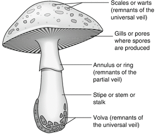
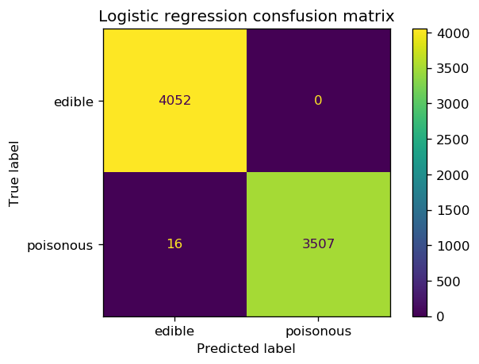
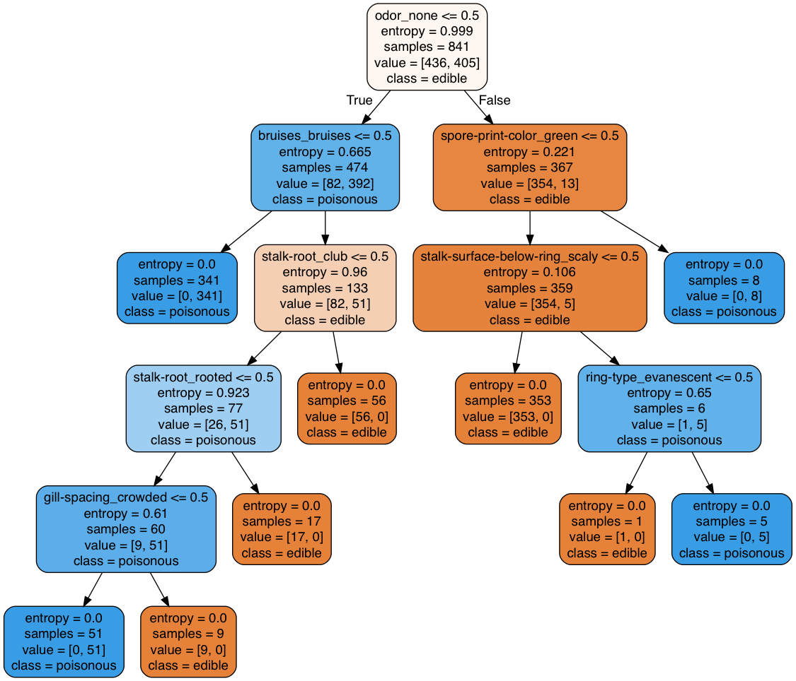
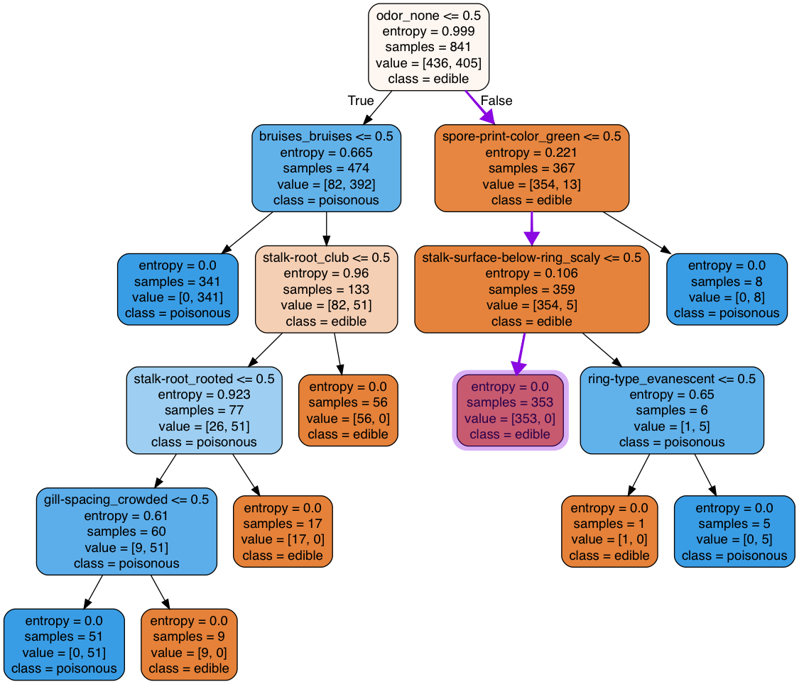
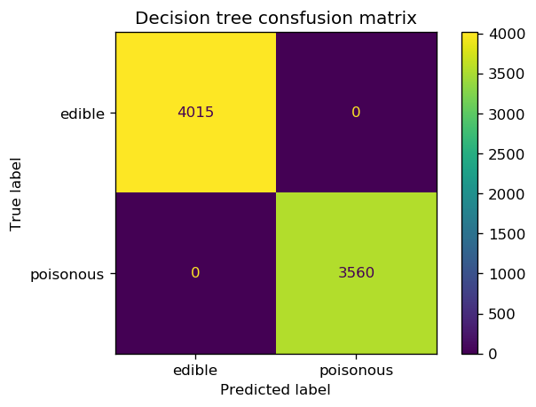
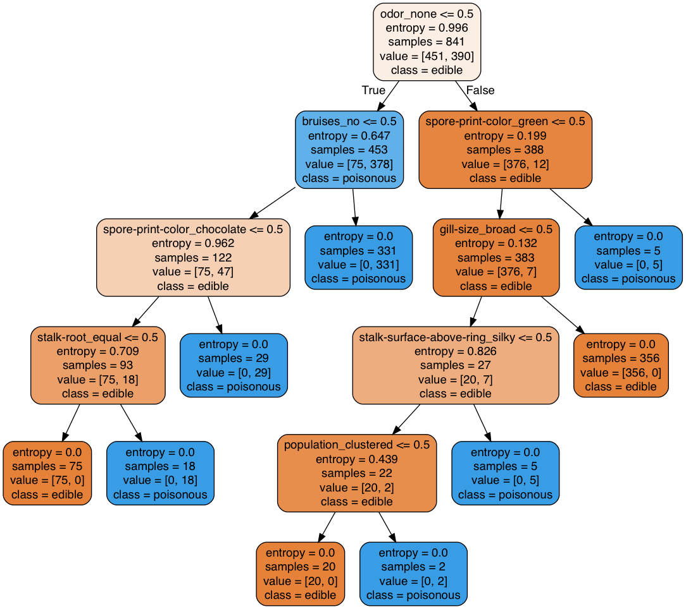

Poisonous Mushroom Detection Using Decision Classifiers
This project demonstrates the application of decision tree algorithms to classify mushrooms into poisonous and edible according to their characteristics. The dataset is obtained from the machine learning repository of University of California Irvine (UCI).
The Guide in the original dataset states that there is no simple rule for determining the edibility of a mushroom; This makes finding a model that can accurately differentiate poisonous mushrooms from edibles very valuable.
Data in csv format (zipped) is available in this link.
Data Metadata
The following describes the values that each column in the dataframe represents:
- cap-shape: bell, conical, convex, flat, knobbed, sunken
- cap-surface: fibrous, grooves, scaly, smooth
- cap-color: brown, buff, cinnamon, gray, green, pink, purple, red, white, yellow
- bruises?: bruises, no
- odor: almond, anise, creosote, fishy, foul, musty, none, pungent, spicy
- gill-attachment: attached, descending, free, notched
- gill-spacing: close, crowded, distant
- gill-size: broad, narrow
- gill-color: black, brown, buff, chocolate, gray, green, orange, pink, purple, red, white, yellow
- stalk-shape: enlarging, tapering
- stalk-root: bulbous, club, cup, equal, rhizomorphs, rooted, missing
- stalk-surface-above-ring: fibrous, scaly, silky, smooth
- stalk-surface-below-ring: fibrous, scaly, silky, smooth
- stalk-color-above-ring: brown, buff, cinnamon, gray, orange, pink, red, white, yellow
- stalk-color-below-ring: brown, buff, cinnamon, gray, orange, pink, red, white, yellow
- veil-type: partial, universal
- veil-color: brown, orange, white, yellow
- ring-number: none, one, two
- ring-type: cobwebby, evanescent, flaring, large, none, pendant, sheathing, zone
- spore-print-color: black, brown, buff, chocolate, green, orange, purple, white, yellow
- population: abundant, clustered, numerous, scattered, several, solitary
- habitat: grasses, leaves, meadows, paths, urban, waste, woods
The target column is the outcome (edible | poisonous) that we would like our model to predict.
The image below is provided as a visual aid for the reader to recognize different features of a mushroom.

Loading the libraries
import numpy as np
import pandas as pd
pd.set_option('display.float_format', lambda x: '%.5f' % x)
import matplotlib.pyplot as plt
%matplotlib inline
Loading the Data
mushroom_df = pd.read_csv('mushrooms.csv')
Data Exploration
mushroom_df.iloc[:5,:13]
| target | cap-shape | cap-surface | cap-color | bruises | odor | gill-attachment | gill-spacing | gill-size | gill-color | stalk-shape | stalk-root | stalk-surface-above-ring | |
|---|---|---|---|---|---|---|---|---|---|---|---|---|---|
| 0 | edible | convex | smooth | white | bruises | almond | free | crowded | narrow | white | tapering | bulbous | smooth |
| 1 | edible | convex | smooth | white | bruises | almond | free | crowded | narrow | white | tapering | bulbous | smooth |
| 2 | edible | convex | smooth | white | bruises | almond | free | crowded | narrow | pink | tapering | bulbous | smooth |
| 3 | edible | convex | smooth | white | bruises | almond | free | crowded | narrow | pink | tapering | bulbous | smooth |
| 4 | edible | convex | smooth | white | bruises | almond | free | crowded | narrow | brown | tapering | bulbous | smooth |
mushroom_df.iloc[:5,13:]
| stalk-surface-below-ring | stalk-color-above-ring | stalk-color-below-ring | veil-type | veil-color | ring-number | ring-type | spore-print-color | population | habitat | |
|---|---|---|---|---|---|---|---|---|---|---|
| 0 | smooth | white | white | partial | white | one | pendant | purple | several | woods |
| 1 | smooth | white | white | partial | white | one | pendant | brown | several | woods |
| 2 | smooth | white | white | partial | white | one | pendant | purple | several | woods |
| 3 | smooth | white | white | partial | white | one | pendant | brown | several | woods |
| 4 | smooth | white | white | partial | white | one | pendant | purple | several | woods |
print(mushroom_df.info());
RangeIndex: 8416 entries, 0 to 8415 Data columns (total 23 columns): # Column Non-Null Count Dtype --- ------ -------------- ----- 0 target 8416 non-null category 1 cap-shape 8416 non-null category 2 cap-surface 8416 non-null category 3 cap-color 8416 non-null category 4 bruises 8416 non-null category 5 odor 8416 non-null category 6 gill-attachment 8416 non-null category 7 gill-spacing 8416 non-null category 8 gill-size 8416 non-null category 9 gill-color 8416 non-null category 10 stalk-shape 8416 non-null category 11 stalk-root 8416 non-null category 12 stalk-surface-above-ring 8416 non-null category 13 stalk-surface-below-ring 8416 non-null category 14 stalk-color-above-ring 8416 non-null category 15 stalk-color-below-ring 8416 non-null category 16 veil-type 8416 non-null category 17 veil-color 8416 non-null category 18 ring-number 8416 non-null category 19 ring-type 8416 non-null category 20 spore-print-color 8416 non-null category 21 population 8416 non-null category 22 habitat 8416 non-null category dtypes: category(23) memory usage: 194.1 KB
We start by looking at the datatypes of the feature and output variables.
mushroom_df.dtypes
target object cap-shape object cap-surface object cap-color object bruises object odor object gill-attachment object gill-spacing object gill-size object gill-color object stalk-shape object stalk-root object stalk-surface-above-ring object stalk-surface-below-ring object stalk-color-above-ring object stalk-color-below-ring object veil-type object veil-color object ring-number object ring-type object spore-print-color object population object habitat object dtype: object
We first change the type of all columns from object to category.
from pandas.api.types import CategoricalDtype
mushroom_df = mushroom_df.astype("category")
mushroom_df.dtypes
target category cap-shape category cap-surface category cap-color category bruises category odor category gill-attachment category gill-spacing category gill-size category gill-color category stalk-shape category stalk-root category stalk-surface-above-ring category stalk-surface-below-ring category stalk-color-above-ring category stalk-color-below-ring category veil-type category veil-color category ring-number category ring-type category spore-print-color category population category habitat category dtype: object
target is the output column and the rest are the features of mushroom.
features = list(mushroom_df.columns[mushroom_df.columns!='target'])
print(features)
['cap-shape', 'cap-surface', 'cap-color', 'bruises', 'odor', 'gill-attachment', 'gill-spacing', 'gill-size', 'gill-color', 'stalk-shape', 'stalk-root', 'stalk-surface-above-ring', 'stalk-surface-below-ring', 'stalk-color-above-ring', 'stalk-color-below-ring', 'veil-type', 'veil-color', 'ring-number', 'ring-type', 'spore-print-color', 'population', 'habitat']
Next, we divide the data into the feature matrix $X$ and outcome vector $y$.
X = mushroom_df[features].values #features
y = mushroom_df['target'].values #target class
Encoding the categorical features
As we noticed, all the features in this dataset are categorical features but machine learning models require all input and output variables to be numeric. There are multiple aproaches to convert categorical variables into numerics such as Ordinal Encoding, One-Hot Encoding, and Dummy Varibale Encoding. For machine-learning applications, it's almost always safer to handle categorical data using One-Hot encoding. We use sklearn's OneHotEncoder in this project.
Let's briefly overview what happens when we One-Hot encode a categorical feature. Let's assume we have a feature column color with colors yellow, blue, and purple.
| index | color |
|---|---|
| 0 | blue |
| 1 | purple |
| 2 | blue |
| 3 | blue |
| 4 | blue |
| 5 | yellow |
| 6 | blue |
| 7 | blue |
| 8 | yellow |
| 9 | blue |
| 10 | purple |
| 11 | purple |
One-Hot encoder encodes each color using using a unique vector length $n$ with $n-1$ $0$s and one $1$ where $n$ is the number of unique colors. The position of $1$ in the vector depends on the color. For example the One-Hot encoded representation of the above example will look like:
| index | color_blue | color_purple | color_yellow |
|---|---|---|---|
| 0 | 1 | 0 | 0 |
| 1 | 0 | 1 | 0 |
| 2 | 1 | 0 | 0 |
| 3 | 1 | 0 | 0 |
| 4 | 1 | 0 | 0 |
| 5 | 0 | 0 | 1 |
| 6 | 1 | 0 | 0 |
| 7 | 1 | 0 | 0 |
| 8 | 0 | 0 | 1 |
| 9 | 1 | 0 | 0 |
| 10 | 0 | 1 | 0 |
| 11 | 0 | 1 | 0 |
Now that we have a basic understanding about encoding the categorical variables into numerics, we can define a function to transform categorical features to One-Hot encoded features.
from sklearn.preprocessing import OneHotEncoder, LabelEncoder
from sklearn.model_selection import train_test_split
# encode the input data
def prepare_inputs(X_train, X_test):
# Set "handle_unknown" argument to "ignore". This is useful in case the model encounters a
# new feature level. Foe example, you train a model with unique colors "blue", "purple", and "yellow"
# and there is a color "red" appearing in the test data.
oh_encoder = OneHotEncoder(handle_unknown="ignore")
oh_encoder.fit(X_train)
X_train_enc = oh_encoder.transform(X_train)
X_test_enc = oh_encoder.transform(X_test)
return X_train_enc, X_test_enc
# encode the target
def prepare_targets(y_train, y_test):
# LableEncoder is pretty much the same as One-Hot encoder but is used for the target variable (labels)
le = LabelEncoder()
le.fit(y_train)
y_train_enc = le.transform(y_train)
y_test_enc = le.transform(y_test)
return y_train_enc, y_test_enc
Splitting the dataset to training (80%) and test data (20%)
X_train, X_test, y_train, y_test = train_test_split(X, y, test_size=0.3, random_state=1)
X_train_enc, X_test_enc = prepare_inputs(X_train, X_test)
y_train_enc, y_test_enc = prepare_targets(y_train, y_test)
The One-Hot encoded features can be obtained using get_feature_names method of the encoder:
oh_encoder_all = OneHotEncoder()
oh_encoder_all.fit(X)
encoded_features = oh_encoder_all.get_feature_names(features)
print(encoded_features)
['cap-shape_bell' 'cap-shape_conical' 'cap-shape_convex' 'cap-shape_flat' 'cap-shape_knobbed' 'cap-shape_sunken' 'cap-surface_fibrous' 'cap-surface_grooves' 'cap-surface_scaly' 'cap-surface_smooth' 'cap-color_brown' 'cap-color_buff' 'cap-color_cinnamon' 'cap-color_gray' 'cap-color_green' 'cap-color_pink' 'cap-color_purple' 'cap-color_red' 'cap-color_white' 'cap-color_yellow' 'bruises_bruises' 'bruises_no' 'odor_almond' 'odor_anise' 'odor_creosote' 'odor_fishy' 'odor_foul' 'odor_musty' 'odor_none' 'odor_pungent' 'odor_spicy' 'gill-attachment_attached' 'gill-attachment_free' 'gill-spacing_close' 'gill-spacing_crowded' 'gill-size_broad' 'gill-size_narrow' 'gill-color_black' 'gill-color_brown' 'gill-color_buff' 'gill-color_chocolate' 'gill-color_gray' 'gill-color_green' 'gill-color_orange' 'gill-color_pink' 'gill-color_purple' 'gill-color_red' 'gill-color_white' 'gill-color_yellow' 'stalk-shape_enlarging' 'stalk-shape_tapering' 'stalk-root_?' 'stalk-root_bulbous' 'stalk-root_club' 'stalk-root_equal' 'stalk-root_rooted' 'stalk-surface-above-ring_fibrous' 'stalk-surface-above-ring_scaly' 'stalk-surface-above-ring_silky' 'stalk-surface-above-ring_smooth' 'stalk-surface-below-ring_fibrous' 'stalk-surface-below-ring_scaly' 'stalk-surface-below-ring_silky' 'stalk-surface-below-ring_smooth' 'stalk-color-above-ring_brown' 'stalk-color-above-ring_buff' 'stalk-color-above-ring_cinnamon' 'stalk-color-above-ring_gray' 'stalk-color-above-ring_orange' 'stalk-color-above-ring_pink' 'stalk-color-above-ring_red' 'stalk-color-above-ring_white' 'stalk-color-above-ring_yellow' 'stalk-color-below-ring_brown' 'stalk-color-below-ring_buff' 'stalk-color-below-ring_cinnamon' 'stalk-color-below-ring_gray' 'stalk-color-below-ring_orange' 'stalk-color-below-ring_pink' 'stalk-color-below-ring_red' 'stalk-color-below-ring_white' 'stalk-color-below-ring_yellow' 'veil-type_partial' 'veil-color_brown' 'veil-color_orange' 'veil-color_white' 'veil-color_yellow' 'ring-number_none' 'ring-number_one' 'ring-number_two' 'ring-type_evanescent' 'ring-type_flaring' 'ring-type_large' 'ring-type_none' 'ring-type_pendant' 'spore-print-color_black' 'spore-print-color_brown' 'spore-print-color_buff' 'spore-print-color_chocolate' 'spore-print-color_green' 'spore-print-color_orange' 'spore-print-color_purple' 'spore-print-color_white' 'spore-print-color_yellow' 'population_abundant' 'population_clustered' 'population_numerous' 'population_scattered' 'population_several' 'population_solitary' 'habitat_grasses' 'habitat_leaves' 'habitat_meadows' 'habitat_paths' 'habitat_urban' 'habitat_waste' 'habitat_woods']
print(f'The dataset has {X.shape[1]} features and {len(encoded_features)} One-Hot encoded features')
The dataset has 22 features and 117 One-Hot encoded features.
Baseline Classifier
We start off with a baseline solution and train a logistic regression classifier. Later, we compare the performance of the decision tree model with the baseline solution and see if we can come up with a decision tree model that surpasses the performance of the baseline solution.
clf_logreg = LogisticRegression(solver='lbfgs')
clf_logreg.fit(X_train_enc, y_train_enc)
y_pred = clf_logreg.predict(X_test_enc)
We can use different metrics to assess the performance of the logistic regression classifier.
from sklearn.metrics import accuracy_score, classification_report
print(classification_report(y_test_enc, y_pred, digits=3))
precision recall f1-score support
0 1.000 1.000 1.000 1317
1 1.000 1.000 1.000 1208
accuracy 1.000 2525
macro avg 1.000 1.000 1.000 2525
weighted avg 1.000 1.000 1.000 2525
accuracy = accuracy_score(y_test_enc, y_pred)
print('Accuracy: %.2f' % (accuracy*100))
Accuracy: 100.00
The baseline classifier reaches perfect accuracy with 100% accuracy! This makes making a more complex solution pointless as the baseline solution is flawless! Let's reduce the number of training samples to make the problem a bit harder for our baseline classifier!
Using a smaller training set: splitting the dataset to training (10%) and test data (90%)!
# We are going to use indices later!
indices = np.arange(len(mushroom_df))
X_train, X_test, y_train, y_test, tr_ids, test_ids = train_test_split(X, y, indices, test_size=0.9, random_state=10)
X_train_enc, X_test_enc = prepare_inputs(X_train, X_test)
y_train_enc, y_test_enc = prepare_targets(y_train, y_test)
clf_logreg = LogisticRegression(solver='lbfgs')
clf_logreg.fit(X_train_enc, y_train_enc)
y_pred = clf_logreg.predict(X_test_enc)
print(classification_report(y_test_enc, y_pred, digits=3))
precision recall f1-score support
0 0.996 1.000 0.998 4052
1 1.000 0.995 0.998 3523
accuracy 0.998 7575
macro avg 0.998 0.998 0.998 7575
weighted avg 0.998 0.998 0.998 7575
from sklearn.metrics import confusion_matrix, ConfusionMatrixDisplay
cm = confusion_matrix(y_test_enc, y_pred)
cm
array([[4052, 0],
[ 16, 3507]])
fig, ax = plt.subplots(1, 1, dpi=120)
cm_plot = ConfusionMatrixDisplay(confusion_matrix=cm, display_labels=['edible', 'poisonous'])
ax.set_title('Logistic regression consfusion matrix')
cm_plot.plot(ax=ax);

Even though we really pushed the limits of the logistic regression classifier by reducing the number of training data, the classifier still does a great job of predicting the correct class. There are, however, 16 instances that the classifier demonstrates type II error by labeling poisonous mushrooms as edible. This is something concerning because in reality this can cause harch consequences. We can now start building the decision tree classifier and see if we can improve the accuracy of the model in identifying poisonous mushrooms compared to the baseline model.
Decision Tree Classifier
In this section we train two decision tree classifiers with the same exact properties except the criterion to assess the quality of a split. One model uses the Gini impurity index whereas the other uses entropy AKA information gain
from sklearn.tree import DecisionTreeClassifier, export_graphviz
import graphviz
# Create Decision Tree classifer object
clf_gini = DecisionTreeClassifier(criterion="gini", random_state=10, max_depth=5, max_leaf_nodes=10)
clf_entropy = DecisionTreeClassifier(criterion="entropy", random_state=10, max_depth=5, max_leaf_nodes=10)
# Train Decision Tree Classifer
clf_gini = clf_gini.fit(X_train_enc,y_train_enc)
clf_entropy = clf_entropy.fit(X_train_enc,y_train_enc)
# Predict the response for test dataset
y_pred_gini = clf_gini.predict(X_test_enc)
y_pred_entropy = clf_entropy.predict(X_test_enc)
y_pred_gini, digits=3))
precision recall f1-score support
0 0.996 0.994 0.995 4052
1 0.993 0.995 0.994 3523
accuracy 0.995 7575
macro avg 0.995 0.995 0.995 7575
weighted avg 0.995 0.995 0.995 7575
print(classification_report(y_test_enc, y_pred_entropy, digits=3))
precision recall f1-score support
0 0.998 1.000 0.999 4052
1 1.000 0.998 0.999 3523
accuracy 0.999 7575
macro avg 0.999 0.999 0.999 7575
weighted avg 0.999 0.999 0.999 7575
fig, ax = plt.subplots(1, 1, dpi=120)
cm = confusion_matrix(y_test_enc, y_pred_gini)
cm_plot = ConfusionMatrixDisplay(confusion_matrix=cm, display_labels=['edible', 'poisonous'])
ax.set_title('Decision tree consfusion matrix')
cm_plot.plot(ax=ax);
fig, ax = plt.subplots(1, 1, dpi=120)
cm = confusion_matrix(y_test_enc, y_pred_entropy)
cm_plot = ConfusionMatrixDisplay(confusion_matrix=cm, display_labels=['edible', 'poisonous'])
ax.set_title('Decision tree consfusion matrix')
cm_plot.plot(ax=ax);
We note that the decision tree with the entropy criterion reaches a higher accuracy than the other tree as well as the baseline classifier. We can generate a plot of the decision tree and look at the rules that the tree has used to defines each split.
from sklearn.tree import export_graphviz
from io import StringIO
from IPython.display import Image
from pydot import graph_from_dot_data
import pydotplus
dot_data = StringIO()
# Training feature names
oh_encoder_tr = OneHotEncoder(handle_unknown="ignore")
oh_encoder_tr.fit(X_train)
encoded_tr_features = oh_encoder_tr.get_feature_names(features)
# Export the tree
export_graphviz(clf_entropy, out_file=dot_data,
filled=True, rounded=True,
special_characters=False,
feature_names = encoded_tr_features,
class_names=['edible', 'poisonous'])
graph = pydotplus.graph_from_dot_data(dot_data.getvalue())
Image(graph.create_png(), width=800, height=400)

Another simple yet useful way to present the decision tree result is using the tree.export_text method of sklearn
from sklearn.tree import export_text
tree_text = export_text(clf_entropy, feature_names = list(encoded_tr_features))
print(tree_text)
|--- odor_none <= 0.50 | |--- bruises_bruises <= 0.50 | | |--- class: 1 | |--- bruises_bruises > 0.50 | | |--- stalk-root_club <= 0.50 | | | |--- stalk-root_rooted <= 0.50 | | | | |--- gill-spacing_crowded <= 0.50 | | | | | |--- class: 1 | | | | |--- gill-spacing_crowded > 0.50 | | | | | |--- class: 0 | | | |--- stalk-root_rooted > 0.50 | | | | |--- class: 0 | | |--- stalk-root_club > 0.50 | | | |--- class: 0 |--- odor_none > 0.50 | |--- spore-print-color_green <= 0.50 | | |--- stalk-surface-below-ring_scaly <= 0.50 | | | |--- class: 0 | | |--- stalk-surface-below-ring_scaly > 0.50 | | | |--- ring-type_evanescent <= 0.50 | | | | |--- class: 0 | | | |--- ring-type_evanescent > 0.50 | | | | |--- class: 1 | |--- spore-print-color_green > 0.50 | | |--- class: 1
Model diagnosis
One critical step before attempting to improve the accuracy of any model is to figure out what is going wrong. In our case, we would like to see if we can figure out what causes the model giving wrong predictions. First we take a look at the features that are used to train the model and see if there are any features in the test cases that the model has not seen before. This is a common case when dealing with decison tree classifiers with categorical features.
oh_encoder = OneHotEncoder()
oh_encoder.fit(X_test)
encoded_test_features = oh_encoder.get_feature_names(features)
len(encoded_test_features), len(encoded_tr_features)
(117, 113)
We can take a look at the difference between the two lists:
list(encoded_tr_features)))
['cap-shape_conical', 'cap-surface_grooves', 'stalk-color-above-ring_yellow', 'veil-color_yellow']
The model has not seen these features in the training phase. Next, we take a look at the records that have at least one of the above features.
unseen_data = mushroom_df[
(mushroom_df['cap-shape']=='conical')
| (mushroom_df['cap-surface']=='grooves')
| (mushroom_df['veil-color']=='yellow')
| (mushroom_df['stalk-color-above-ring']=='yellow')
]
unseen_data
| target | cap-shape | cap-surface | cap-color | bruises | odor | gill-attachment | gill-spacing | gill-size | gill-color | ... | stalk-surface-below-ring | stalk-color-above-ring | stalk-color-below-ring | veil-type | veil-color | ring-number | ring-type | spore-print-color | population | habitat | |
|---|---|---|---|---|---|---|---|---|---|---|---|---|---|---|---|---|---|---|---|---|---|
| 6064 | poisonous | bell | grooves | white | bruises | none | free | crowded | narrow | white | ... | smooth | white | white | partial | white | one | pendant | white | clustered | leaves |
| 6066 | poisonous | conical | grooves | white | bruises | none | free | crowded | narrow | white | ... | smooth | white | white | partial | white | one | pendant | white | clustered | leaves |
| 6067 | poisonous | conical | scaly | white | bruises | none | free | crowded | narrow | white | ... | smooth | white | white | partial | white | one | pendant | white | clustered | leaves |
| 6068 | poisonous | flat | grooves | white | bruises | none | free | crowded | narrow | white | ... | smooth | white | white | partial | white | one | pendant | white | clustered | leaves |
| 6070 | poisonous | knobbed | grooves | white | bruises | none | free | crowded | narrow | white | ... | smooth | white | white | partial | white | one | pendant | white | clustered | leaves |
| 7880 | poisonous | bell | scaly | yellow | no | none | free | crowded | narrow | yellow | ... | scaly | yellow | yellow | partial | yellow | one | evanescent | white | clustered | leaves |
| 7881 | poisonous | bell | scaly | yellow | no | none | free | crowded | narrow | white | ... | scaly | yellow | yellow | partial | yellow | one | evanescent | white | clustered | leaves |
| 7882 | poisonous | conical | scaly | yellow | no | none | free | crowded | narrow | yellow | ... | scaly | yellow | yellow | partial | yellow | one | evanescent | white | clustered | leaves |
| 7883 | poisonous | conical | scaly | yellow | no | none | free | crowded | narrow | white | ... | scaly | yellow | yellow | partial | yellow | one | evanescent | white | clustered | leaves |
| 7884 | poisonous | flat | scaly | yellow | no | none | free | crowded | narrow | yellow | ... | scaly | yellow | yellow | partial | yellow | one | evanescent | white | clustered | leaves |
| 7885 | poisonous | flat | scaly | yellow | no | none | free | crowded | narrow | white | ... | scaly | yellow | yellow | partial | yellow | one | evanescent | white | clustered | leaves |
| 7886 | poisonous | knobbed | scaly | yellow | no | none | free | crowded | narrow | yellow | ... | scaly | yellow | yellow | partial | yellow | one | evanescent | white | clustered | leaves |
| 7887 | poisonous | knobbed | scaly | yellow | no | none | free | crowded | narrow | white | ... | scaly | yellow | yellow | partial | yellow | one | evanescent | white | clustered | leaves |
13 rows × 23 columns
X_test_unseen = unseen_data[features].values
__, X_test_unseen_enc = prepare_inputs(X_train, X_test_unseen)
y_pred_unseen = clf_entropy.predict(X_test_unseen_enc)
y_pred_unseen
array([0, 0, 0, 0, 0, 1, 1, 1, 1, 1, 1, 1, 1])
We notice that 5 out of the 8 wrong predictoins belong to the instances with features that the model has not seen during the training phase. All the wrong predictions can be found using:
false_predictions = np.where(y_test_enc!=y_pred_entropy)
false_predictions
(array([3535, 4237, 4628, 4734, 5692, 6063, 7159, 7283]),)
np.sort(test_ids[false_predictions])
array([6064, 6065, 6066, 6067, 6068, 6069, 6070, 6071])
Now we can take a closer look at the recoreds that were misclassified by the tree:
mushroom_df.iloc[np.sort(test_ids[false_predictions]), :12]
| target | cap-shape | cap-surface | cap-color | bruises | odor | gill-attachment | gill-spacing | gill-size | gill-color | stalk-shape | stalk-root | |
|---|---|---|---|---|---|---|---|---|---|---|---|---|
| 6064 | poisonous | bell | grooves | white | bruises | none | free | crowded | narrow | white | enlarging | bulbous |
| 6065 | poisonous | bell | scaly | white | bruises | none | free | crowded | narrow | white | enlarging | bulbous |
| 6066 | poisonous | conical | grooves | white | bruises | none | free | crowded | narrow | white | enlarging | bulbous |
| 6067 | poisonous | conical | scaly | white | bruises | none | free | crowded | narrow | white | enlarging | bulbous |
| 6068 | poisonous | flat | grooves | white | bruises | none | free | crowded | narrow | white | enlarging | bulbous |
| 6069 | poisonous | flat | scaly | white | bruises | none | free | crowded | narrow | white | enlarging | bulbous |
| 6070 | poisonous | knobbed | grooves | white | bruises | none | free | crowded | narrow | white | enlarging | bulbous |
| 6071 | poisonous | knobbed | scaly | white | bruises | none | free | crowded | narrow | white | enlarging | bulbous |
Interestingly, a little bit of investigation shows that the misclassified instances can be found using the following rules:
mushroom_df[
(mushroom_df['cap-color']=='white')
& (mushroom_df['bruises']=='bruises')
& (mushroom_df['odor']=='none')
& (mushroom_df['gill-spacing']=='crowded')
]
| target | cap-shape | cap-surface | cap-color | bruises | odor | gill-attachment | gill-spacing | gill-size | gill-color | ... | stalk-surface-below-ring | stalk-color-above-ring | stalk-color-below-ring | veil-type | veil-color | ring-number | ring-type | spore-print-color | population | habitat | |
|---|---|---|---|---|---|---|---|---|---|---|---|---|---|---|---|---|---|---|---|---|---|
| 6064 | poisonous | bell | grooves | white | bruises | none | free | crowded | narrow | white | ... | smooth | white | white | partial | white | one | pendant | white | clustered | leaves |
| 6065 | poisonous | bell | scaly | white | bruises | none | free | crowded | narrow | white | ... | smooth | white | white | partial | white | one | pendant | white | clustered | leaves |
| 6066 | poisonous | conical | grooves | white | bruises | none | free | crowded | narrow | white | ... | smooth | white | white | partial | white | one | pendant | white | clustered | leaves |
| 6067 | poisonous | conical | scaly | white | bruises | none | free | crowded | narrow | white | ... | smooth | white | white | partial | white | one | pendant | white | clustered | leaves |
| 6068 | poisonous | flat | grooves | white | bruises | none | free | crowded | narrow | white | ... | smooth | white | white | partial | white | one | pendant | white | clustered | leaves |
| 6069 | poisonous | flat | scaly | white | bruises | none | free | crowded | narrow | white | ... | smooth | white | white | partial | white | one | pendant | white | clustered | leaves |
| 6070 | poisonous | knobbed | grooves | white | bruises | none | free | crowded | narrow | white | ... | smooth | white | white | partial | white | one | pendant | white | clustered | leaves |
| 6071 | poisonous | knobbed | scaly | white | bruises | none | free | crowded | narrow | white | ... | smooth | white | white | partial | white | one | pendant | white | clustered | leaves |
8 rows × 23 columns
But the model has not encountered this situation during the training as seen below:
mushroom_df_tr = mushroom_df.iloc[np.sort(tr_ids), :]
mushroom_df_tr[
(mushroom_df_tr['cap-color']=='white')
& (mushroom_df_tr['bruises']=='bruises')
& (mushroom_df_tr['odor']=='none')
& (mushroom_df_tr['gill-spacing']=='crowded')
]
| target | cap-shape | cap-surface | cap-color | bruises | odor | gill-attachment | gill-spacing | gill-size | gill-color | ... | stalk-surface-below-ring | stalk-color-above-ring | stalk-color-below-ring | veil-type | veil-color | ring-number | ring-type | spore-print-color | population | habitat |
|---|
0 rows × 23 columns
We can investigate what caused these wrong predictions by considering the featutes that are common between the misclassified instances and walk down the tree to see at which split the misclassification occurs. odor=none, meaning that odor_none$\leq$0.5 is False (because odor_none=1) so in the first split on the tree we move to the right) spore-print-color=white, meaning that spore-print-color_green$\leq$0.5 is True so in the next split on the tree we move to the left stalk-surface-below-ring=smooth, meaning that stalk-surface-below-ring_scaly$\leq$0.5 is True so in the next split on the tree we move to the left. At this point, we have reached a leaf that according to the trained model gives the output for the misclassifies instances to be edible. The process is shown using a purple arrow in the figure below.

Note that what this means is no matter how much we change the tree structure (increase the tree depth, leaf nodes, etc.), the misclassified instances will remain misclassified! In other words, increasing the complexity of the tree is not a solution. We can, however, find a tree with the same exact strucure as the current tree by traying different training-set samplings. We would also test the baseline estimator on these instances for the sake of comparison.
Cross-validation
Here we use cross-validation by re-sampling the training-data 10 times while conserving the size of training set.
num_val_tests = 20
best_tree_model = clf_entropy
best_tree_score = best_tree_model.score(X_test_enc, y_test_enc)
best_logreg_model = clf_logreg
best_logreg_score = best_logreg_model.score(X_test_enc, y_test_enc)
for i in range(num_val_tests):
seed = np.random.randint(1000)
# train/test split
X_train, X_test, y_train, y_test, tr_ids, test_ids = train_test_split(
X, y, indices, test_size=0.9, random_state=seed
)
# instantiate the DecisionTreeClassifier and the
clf_tree_tmp = DecisionTreeClassifier(
criterion="entropy", random_state=10, max_depth=5, max_leaf_nodes=10
)
clf_logreg_tmp = LogisticRegression(solver='lbfgs')
# encode train/test
X_train_enc, X_test_enc = prepare_inputs(X_train, X_test)
y_train_enc, y_test_enc = prepare_targets(y_train, y_test)
# fit
clf_tree_tmp = clf_tree_tmp.fit(X_train_enc,y_train_enc)
clf_logreg_tmp = clf_logreg_tmp.fit(X_train_enc,y_train_enc)
# evaluate
tree_score = clf_tree_tmp.score(X_test_enc, y_test_enc)
logreg_score = clf_logreg_tmp.score(X_test_enc, y_test_enc)
# compare with the best tree model so far
if tree_score > best_tree_score:
best_tree_score = tree_score
best_tree_model = clf_tree_tmp
X_enc_best_tree = X_test_enc
y_enc_best_tree = y_test_enc
seed_best_tree = seed
# repeat for the logistic regression model
if logreg_score > best_logreg_score:
best_logreg_score = logreg_score
best_logreg_model = clf_logreg_tmp
X_enc_best_logreg = X_test_enc
y_enc_best_logreg = y_test_enc
seed_best_logreg = seed
print(f"best decision tree model reaches the accuracy {np.round(best_tree_score*100, 3)}%")
print(f"best logistic regression model reaches the accuracy {np.round(best_logreg_score*100, 3)}%")
best decision tree model reaches the accuracy 100.0% best logistic regression model reaches the accuracy 99.908%
We note that without having to increase the complexity of the model, we were able to find a perfect model.
y_pred_tree = best_tree_model.predict(X_enc_best_tree)
y_pred_logreg = best_logreg_model.predict(X_enc_best_logreg)
print(classification_report(y_enc_best_tree, y_pred_tree, digits=3))
precision recall f1-score support
0 1.000 1.000 1.000 4015
1 1.000 1.000 1.000 3560
accuracy 1.000 7575
macro avg 1.000 1.000 1.000 7575
weighted avg 1.000 1.000 1.000 7575
fig, ax = plt.subplots(1, 1, dpi=120)
cm = confusion_matrix(y_enc_best_tree, y_pred_tree)
cm_plot = ConfusionMatrixDisplay(confusion_matrix=cm, display_labels=['edible', 'poisonous'])
ax.set_title('Decision tree consfusion matrix')
cm_plot.plot(ax=ax);

print(classification_report(y_enc_best_logreg, y_pred_logreg, digits=3))
precision recall f1-score support
0 0.999 1.000 0.999 4084
1 1.000 0.998 0.999 3491
accuracy 0.999 7575
macro avg 0.999 0.999 0.999 7575
weighted avg 0.999 0.999 0.999 7575
fig, ax = plt.subplots(1, 1, dpi=120)
cm = confusion_matrix(y_enc_best_logreg, y_pred_logreg)
cm_plot = ConfusionMatrixDisplay(confusion_matrix=cm, display_labels=['edible', 'poisonous'])
ax.set_title('Logistic regression consfusion matrix')
cm_plot.plot(ax=ax);
Visualizing the best tree
dot_data = StringIO()
# Training feature names
oh_encoder_tr = OneHotEncoder(handle_unknown="ignore")
X_train, X_test, y_train, y_test, tr_ids, test_ids = train_test_split(
X, y, indices, test_size=0.9, random_state=seed_best_tree
)
oh_encoder_tr.fit(X_train)
encoded_tr_features = oh_encoder_tr.get_feature_names(features)
# Export the tree
export_graphviz(best_tree_model, out_file=dot_data,
filled=True, rounded=True,
special_characters=False,
feature_names = encoded_tr_features,
class_names=['edible', 'poisonous'])
graph = pydotplus.graph_from_dot_data(dot_data.getvalue())
Image(graph.create_png(), width=800, height=400)

Note that the features that the best tree is using to split on are very different from the ones that were used previously as they depend on the training set that is used to train the tree.
Conslusion
- In this post we applied a decision tree classifier to detect poisonous mushrooms in a mushroom dataset with 8416 records.
- We learned that decision tree classifiers can handle unknown features in the test set but these unknown features are likely to be misclassified
- We lobserved that there are certain situations that the error is due to lack of training data and the only way to resolve the misclassified instances is to train the model using new data. We achieved this by cross-validation.
- Cross-validation is a great asset to keep the model simple and prevent overfitting.
- We noticed that diagnosing the model before attempting to increase the complexity of the model can sometimes be beneficial and lead to a model with a better accuracy without necessarily adding to the complexity of the model